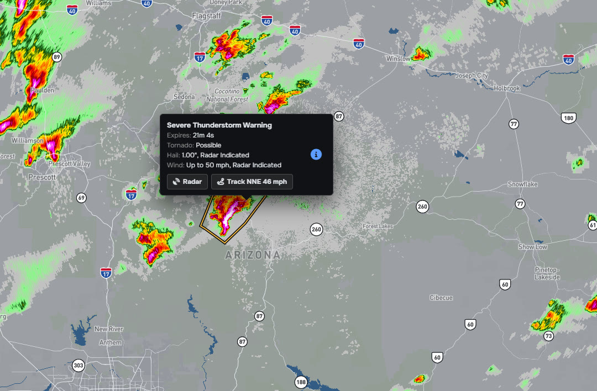
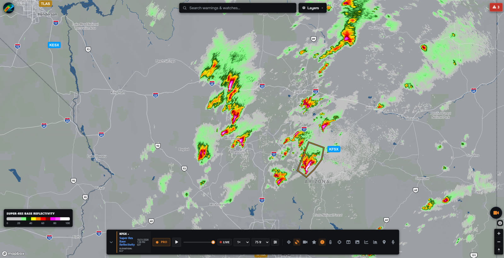
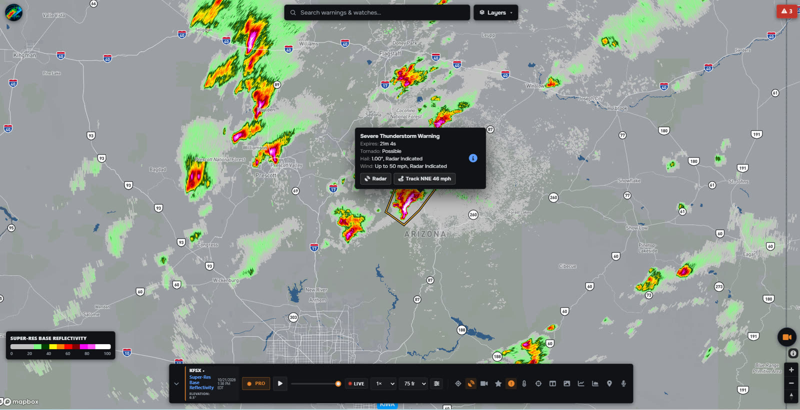
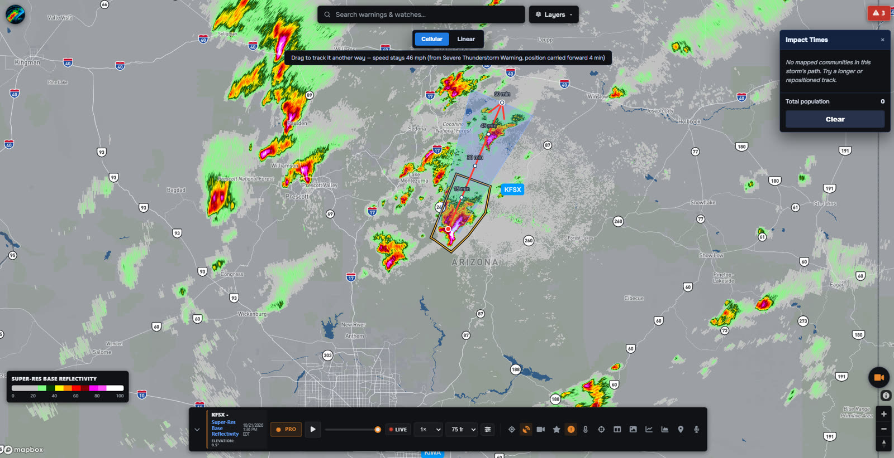
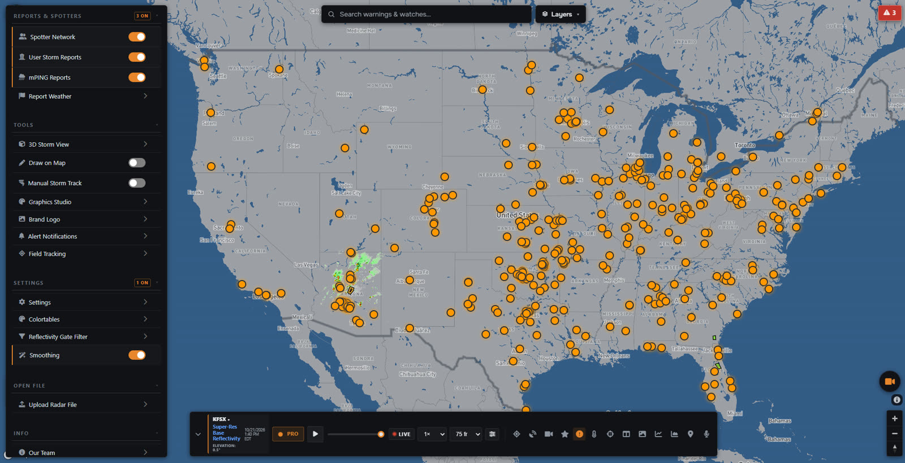
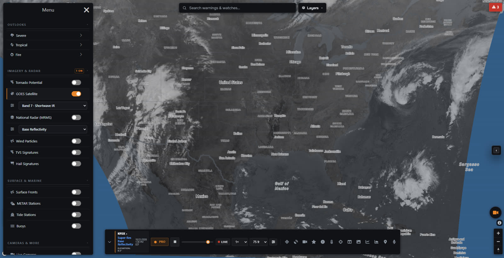
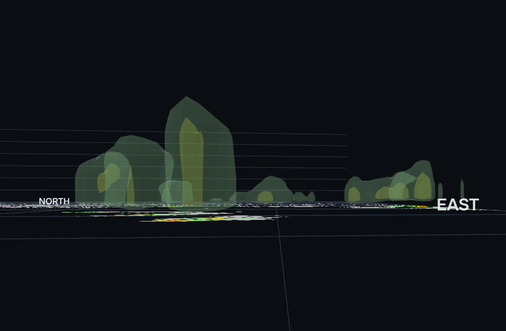

Alerts by polygon, not county
You're alerted only when your saved place is inside the warning the forecast office actually drew. A warning at the far end of your county won't wake you up for nothing.
Full-resolution NEXRAD the moment it scans, warnings that only alert you when you are actually inside the polygon, and live storm chasers on the map. Use it in your browser on your phone or computer.

Home is inside the warning. Take shelter now.
Most radar apps show you the storm. Echo Radar also tells you whether it will reach you, shows you the people watching it, and lets you see it from the ground.
You're alerted only when your saved place is inside the warning the forecast office actually drew. A warning at the far end of your county won't wake you up for nothing.
Press Track on any warning to see where the storm will be in 15, 30, 45 and 60 minutes. Impact Times lists the towns in its path and how many people live there.
Chasers who stream show a red live ring on their Spotter Network beacon. Tap one to watch, and the player follows them as they drive. Chasers can stream into Echo Radar straight from OBS.
DOT cameras in 44 states, right on the radar map, with live video across Texas. See what the storm looks like from the road before you drive into it.
Turn the radar into a 3D storm you can orbit and zoom, in the same reflectivity colours, to see how tall the core reaches and where the hail is.
Echo Graphics makes on-air warning graphics from live NWS data. Pick a state and alert type, and every county is coloured and every time filled in for you.
A quick narrated walk through the app, recorded on live storms.
Echo Radar decodes NOAA's full-resolution Level 2 NEXRAD data right in your browser, so you see every scan at full detail as soon as it's available.

Every NWS warning is on the map as it's issued, with its hail, wind and tornado tags and a countdown to when it expires. PDS warnings flash so you can't miss them.

Track a storm straight from its warning. Echo Radar projects its path with arrival times along the way, and you can drag the track if the storm turns.

See who is out there and what they are seeing. Spotter Network positions, storm reports and live chaser video all appear right on the radar map.

Add what you need on top of the radar from one Layers menu, from satellite and fronts to wildfires and power outages.

Look ahead with outlooks, forecast models and soundings, then build a graphic to share it, all in the same app.

Every account gets live radar, warnings and alerts. Pro unlocks every other tool, at a price you choose.
Everything you need to stay ahead of a storm.
Pay what you want. Every amount unlocks everything.
Choose your amount in the app when you upgrade. Cancel any time from your account.
A professional workspace for TV and radio stations, school districts and emergency management agencies. Set the counties you cover, and their warnings rise to the top with the population affected, ready for air.
Ask about a licence →An emergency operations board for running an incident: warnings sorted by what matters first, a live population-affected count, field reports, spotters, storm tracks and power outages on one screen.
Talk to us →Put Echo Radar's live radar and NWS warnings on your own site, free, with no login. Copy one snippet and visitors can tap any radar site to switch to it.
Get the embed code →Yes. A free account gets live super-res radar, warnings, storm tracking, satellite, spotters, chaser streams, traffic cameras and alerts by phone, desktop and email. Paid tiers add tools like live lightning, split screen, forecast models, 3D Storm View and Echo Graphics.
No. Echo Radar runs in your web browser on phones, tablets and computers, so there's nothing to install. If you'd like a desktop app, Echo Radar WX for Windows is free in the Microsoft Store, with warning notifications that pop up on your desktop.
Echo Radar alerts you only when a place you saved is inside the warning polygon the National Weather Service actually drew, not just somewhere in your county. You can save places by address, city or ZIP, watch up to 10 whole states, and choose which alert types reach you by email.
Open Alert Notifications in the menu, turn them on and add your places. On iPhone, add Echo Radar to your Home Screen first, since Apple only allows notifications from websites saved there. Email alerts work on any device.
Radar comes from NOAA's NEXRAD network and MRMS, warnings from the National Weather Service, satellite from GOES-19, outlooks from the Storm Prediction Center and tropical data from the National Hurricane Center.
Yes. Approved streamers get their own Echo Radar stream key in the Chase Stream Hub to use with OBS. Link your Spotter Network beacon and everyone with the Spotters layer on can watch you live from your position on the map.
Create a free account in under a minute. Live radar, live warnings and alerts for the places you care about.